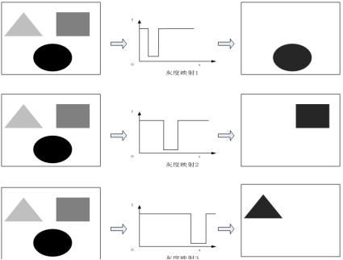
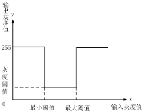

Công cụ Phạm vi Ngưỡng là công cụ tiền xử lý ảnh, dùng để làm nổi bật vùng pixel nằm trong khoảng cường độ xám mà người dùng quan tâm, đồng Briggs thời làm giảm ảnh hưởng của các mức xám còn lại. Thông qua các hàm ánh xạ khác nhau, công cụ này giúp chỉ giữ lại và tăng cường thông tin trong phạm vi ngưỡng mong muốn (xem hình 1).

| Phân loại | Tên tham số | Mô tả tham số |
|---|---|---|
| Cửa sổ thuộc tính | Ngưỡng tối đa | Giới hạn trên của pixel sẽ được ánh xạ. |
| Ngưỡng tối thiểu | Giới hạn dưới của pixel sẽ được ánh xạ. |
|
| Mức xám đầu ra | Mức xám sẽ được gán cho toàn bộ pixel nằm trong khoảng [Ngưỡng tối thiểu, Ngưỡng tối đa] sau khi ánh xạ. |
|
| Cửa sổ ảnh | Ảnh đầu vào | Ảnh cần thực hiện xử lý phạm vi ngưỡng. |
| Chuỗi dữ liệu | Ảnh đầu vào | Ảnh cần thực hiện xử lý phạm vi ngưỡng. |
| Giao diện nâng cao | Không có | Không có |
| Phân loại | Tên tham số | Mô tả tham số |
|---|---|---|
| Cửa sổ giám sát | Ảnh đầu vào | Ảnh gốc cần xử lý. |
| Ảnh đầu ra | Ảnh sau khi đã áp dụng phạm vi ngưỡng. | |
| Kết quả thực thi | Kết quả thực thi công cụ. | |
| Thời gian thực thi | Thời gian xử lý của công cụ. | |
| Cửa sổ ảnh | Ảnh đầu ra | Hiển thị ảnh đã qua xử lý phạm vi ngưỡng. |
| Kết quả thực thi | Thành công → “OK”, thất bại → “NG” (giống cửa sổ giám sát). | |
| Chuỗi dữ liệu | Ảnh đầu ra | Ảnh đã áp dụng phạm vi ngưỡng, dùng cho các công cụ tiếp theo. |
Pixel có mức xám < Ngưỡng tối thiểu sẽ bị gán thành 255 (trắng).
Pixel có mức xám > Ngưỡng tối đa sẽ bị gán thành 255 (trắng).
Pixel có mức xám nằm trong khoảng [Ngưỡng tối thiểu, Ngưỡng tối đa] sẽ được gán chính xác bằng giá trị này.
Công cụ thực hiện ánh xạ mức xám như sau (xem hình 2):
– Nếu mức xám nằm giữa Ngưỡng tối thiểu và Ngưỡng tối đa → giữ nguyên giá trị “Mức xám đầu ra”.
– Nếu nằm ngoài khoảng này → gán thành 255 (trắng).
Kết quả là chỉ vùng quan tâm được giữ mức xám mong muốn, còn lại bị đẩy về trắng.

Không có
参见“\Samples\阈值范围工具.gvp”。